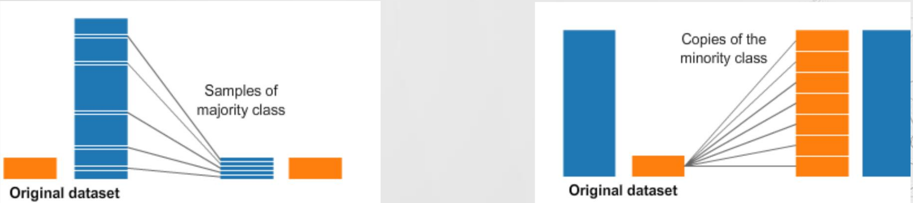

Classification Methods
FEF3001 Yapay zekaya giriş - Ders8
2024-11-28
Contents
- Introduction to supervised learning
- Definition and applications of classification
- Preparing the data
- Feature selection and preprocessing ✅
- Methods
- Decision Trees
- Random Forest
- Support Vector Machines (SVM)
- Logistic Regression
- K-nearest neighbor
- Naive Bayes
- Artificial Neural Networks ✅
- Ensemble methods
- Evaluation ✅
- Confusion Matrix ✅
- Accuracy, precision, recall, F1-score ✅
- ROC curves ✅
- Overfitting and underfitting ✅
- Cross-validation
AI - ML - DL
ML types
- Classical ML
- Supervised
- Unsupervised
- Reinforcement
- Artificial Neural Networks and Deep Learning
ML types
- Classical ML
- Supervised
- Classification
- Regression
- Unsupervised
- Clustering
- Supervised

Definition of classification
- A type of supervised learning
- Goal: Categorize input data into predefined classes or categories
- The model learns to draw decision boundaries between classes
- Output is a discrete class label (unlike regression, which predicts continuous values)
Applications
- Text Classification
- Spam detection in emails
- Sentiment analysis of product reviews
- News article categorization
- Image Classification
- Medical imaging for disease detection
- Facial recognition systems
- Plant or animal species identification
- Financial Applications
- Credit scoring (approve/deny loan applications)
- Fraud detection in transactions
- Healthcare
- Disease diagnosis based on symptoms and test results
- Predicting patient readmission risk
- Environmental Science
- Climate pattern classification
- Species habitat prediction
- Literature and Linguistics
- Authorship attribution
- Genre classification of texts
- Language identification
Your Turn
In the zoom chat window please write down your department and an example of classification task related to your domain
Your Turn
Pick one example and discuss about the data
Visit Kaggle and find related dataset
Training
- Hold out
- Cross validation
Hold-out
Cross validation
Training
In case of Imbalance - Down sampling - Up sampling
ML Flow
Decision Trees
Decision Trees are a classification method that uses a tree-like model of decisions and their possible consequences. The algorithm learns a series of if-then-else decision rules that split the data based on feature values, creating a structure that resembles a flowchart. Each internal node represents a “test” on an attribute, each branch represents the outcome of the test, and each leaf node represents a class label or decision.
branch, test, leaf
Example Data
Resulting decision tree
Example
| Hours studied | Previous Score | Attended Review | Pass? |
|---|---|---|---|
| 3 | 60 | No | ? |
| 4 | 75 | No | ? |
| 7 | 80 | Yes | ? |
Key Metrics for Decision Tree Construction
Questions: Which feature is the first branch? At what value we create a branch (5 hours, 70 points, etc.)
- Entropy
- Information Gain
- Gini Impurity
Entropy
- Entropy is a measure of impurity or uncertainty in a set of examples. In the context of decision trees, it quantifies the disorder in the class labels of a dataset.
Formula: \(H(S) = -\sum_{i=1}^{c} p_i \log_2(p_i)\)
Where \(S\) is the dataset, \(c\) is the number of classes, and \(p_i\) is the proportion of examples belonging to class \(i\).
- Ranges from 0 (completely pure, all examples belong to one class) to \(\log_2(c)\) (completely impure, equal distribution across all classes).
- Used to calculate information gain.
Information Gain
- Information gain measures the reduction in entropy achieved by splitting the data on a particular feature. It helps determine which feature to split on at each node of the decision tree.
Formula: \(IG(S, A) = H(S) - \sum_{v \in Values(A)} \frac{|S_v|}{|S|} H(S_v)\)
Where \(S\) is the dataset, \(A\) is the feature being considered for splitting, \(Values(A)\) are the possible values of feature \(A\), and \(S_v\) is the subset of \(S\) where feature \(A\) has value \(v\).
- Higher information gain indicates a more useful feature for classification.
- The feature with the highest information gain is typically chosen for splitting at each node.
Gini Impurity
- Gini impurity is an alternative to entropy for measuring the impurity of a set of examples. It represents the probability of incorrectly classifying a randomly chosen element if it were randomly labeled according to the distribution of labels in the subset.
Formula: \(Gini(S) = 1 - \sum_{i=1}^{c} (p_i)^2\)
Where \(S\) is the dataset, \(c\) is the number of classes, and \(p_i\) is the proportion of examples belonging to class \(i\).
- Ranges from 0 (completely pure) to \(1 - \frac{1}{c}\) (completely impure).
- Often used in algorithms like CART (Classification and Regression Trees).
The choice between using entropy (with information gain) or Gini impurity often depends on the specific implementation of the decision tree algorithm. In practice, they often yield similar results.
Algoritms for decision tree construction
- ID3
- CART
Please visit this link for details about algoritms
An example with R
https://www.dataspoof.info/post/decision-tree-classification-in-r/
https://forum.posit.co/t/decision-tree-in-r/5561/5
Advantages of Decision Trees:
- Interpretability: Easy to understand and explain, even for non-experts. The decision-making process can be visually represented.
- No or little data preprocessing required: Can handle both numerical and categorical data without the need for normalization or scaling.
- Computationally efficient: Generally fast to train and make predictions, especially with small to medium-sized datasets.
Disadvantages:
- Overfitting: Prone to overfitting, especially with deep trees, leading to poor generalization on new data.
- Instability: Small changes in the data can result in a completely different tree being generated.
- Difficulty with high-dimensional data: Can become computationally expensive and prone to overfitting with many features.
Quiz time
Random Forest
Random forest is a commonly-used machine learning algorithm, trademarked by Leo Breiman and Adele Cutler, that combines the output of multiple decision trees to reach a single result.
Random forests is an ensemble learning method for classification, regression and other tasks that operates by constructing a multitude of decision trees at training time. For classification tasks, the output of the random forest is the class selected by most trees.
Kaggle example
Please visit: https://www.kaggle.com/code/lara311/diabetes-prediction-using-machine-learning
Support Vector Machines
The Basic Idea
Imagine you’re trying to separate different types of objects, like apples and oranges, based on their characteristics, such as color, shape, and size. You want to find a way to draw a line (or a hyperplane in higher dimensions) that separates the two types of objects as accurately as possible.
The SVM Method
A Support Vector Machine is a type of supervised learning algorithm that aims to find the best hyperplane that separates the data into different classes. Here’s how it works:
- Data Preparation: Collect a dataset of objects (e.g., apples and oranges) with their corresponding characteristics (features) and labels (e.g., “apple” or “orange”).
- Plotting the Data: Plot the data points in a feature space, where each axis represents a feature (e.g., color, shape, size).
- Finding the Hyperplane: The goal is to find a hyperplane that separates the data points into different classes. A hyperplane is a line (in 2D) or a plane (in 3D) that divides the feature space into two regions.
- Maximizing the Margin: The SVM algorithm tries to find the hyperplane that maximizes the margin between the two classes. The margin is the distance between the hyperplane and the nearest data points (called support vectors) on either side of the hyperplane.
- Support Vectors: The support vectors are the data points that lie closest to the hyperplane and have the most influence on its position. They are the “support” that helps define the hyperplane.
Support Vector Machines
Key Concepts
- Hyperplane: A line (in 2D) or a plane (in 3D) that separates the data into different classes.
- Margin: The distance between the hyperplane and the nearest data points (support vectors) on either side of the hyperplane.
- Support Vectors: The data points that lie closest to the hyperplane and have the most influence on its position.
Why SVMs are Useful
SVMs are powerful because they:
- Can handle high-dimensional data
- Are robust to noise and outliers
- Can be used for both classification and regression tasks
- Provide a clear geometric interpretation of the decision boundary
H1 does not separate the classes. H2 does, but only with a small margin. H3 separates them with the maximal margin. Source
Maximum-margin hyperplane and margins for an SVM trained with samples from two classes. Samples on the margin are called the support vectors. Source
Please visit SVM demo site for an online interactive demo for SVM
Logistic Regression
The Basic Idea
Logistic regression is a supervised machine learning algorithm that accomplishes binary classification tasks by predicting the probability of an outcome, event, or observation. The model delivers a binary outcome limited to two possible outcomes: yes/no, 0/1, or true/false.
The Logistic Regression Method
Logistic Regression is a type of supervised learning algorithm that models the probability of an event occurring (e.g., passing an exam) based on a set of input variables (e.g., scores). Here’s how it works:
- Data Preparation: Collect a dataset of input variables (e.g., scores) and output variables (e.g., pass/fail).
- Logistic Function: The logistic function, also known as the sigmoid function, is used to model the probability of the event occurring. It maps the input variables to a probability between 0 and 1.
- Log-Odds: The logistic function is based on the log-odds of the event occurring, which is the logarithm of the ratio of the probability of the event occurring to the probability of the event not occurring.
- Coefficients: The algorithm learns the coefficients (weights) for each input variable, which determine the importance of each variable in predicting the output.
- Decision Boundary: The algorithm uses the coefficients and the logistic function to create a decision boundary, which separates the input space into two regions: one for each class (e.g., pass and fail).
- Prediction: For a new input, the algorithm calculates the probability of the event occurring using the logistic function and the learned coefficients. If the probability is above a certain threshold (e.g., 0.5), the algorithm predicts the event will occur (e.g., the student will pass).
Key Concepts
- Logistic Function: A mathematical function that maps input variables to a probability between 0 and 1.
- Log-Odds: The logarithm of the ratio of the probability of the event occurring to the probability of the event not occurring.
- Coefficients: The weights learned by the algorithm for each input variable, which determine their importance in predicting the output.
- Decision Boundary: The boundary that separates the input space into two regions, one for each class.
Why Logistic Regression is Useful
Logistic Regression is a popular algorithm because it:
- Is easy to implement and interpret
- Can handle multiple input variables
- Provides a probability estimate for each prediction
- Is widely used in many fields, such as medicine, finance, and marketing